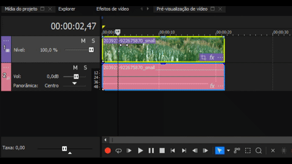
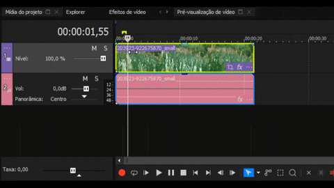

5 Atalhos do Sony Vegas que Vão Dobrar sua Produtividade
Publicado em 29 de Junho de 2025 • Leitura de 5 min

Na edição de vídeo, cada segundo conta. A diferença entre um workflow lento, cheio de cliques, e um fluxo de trabalho ágil muitas vezes está na ponta dos seus dedos literalmente. Deixar o mouse de lado e dominar os atalhos do teclado é o que separa um editor iniciante de um profissional eficiente.
Como um entusiasta de produtividade, estou sempre buscando formas de otimizar meu tempo na ilha de edição. Por isso, compilei 5 dos meus atalhos favoritos no Sony Vegas Pro que, se incorporados no seu dia a dia, podem genuinamente acelerar suas tarefas mais comuns.
Atalho 1: S - Dividir (Split)

O que faz: Corta um ou mais clipes de vídeo/áudio exatamente onde o cursor da timeline está posicionado.
Por que é revolucionário: Este é o atalho mais usado na edição. Em vez de pegar a ferramenta de "navalha" (razor tool), clicar no ponto exato, e depois voltar para a ferramenta de seleção, você simplesmente posiciona o cursor e aperta 'S'. Isso economiza de 2 a 3 cliques por corte. Em uma edição com centenas de cortes, isso representa uma economia de tempo gigantesca.
Atalho 2: G e U - Agrupar e Desagrupar (Group/Ungroup)

O que faz: G agrupa os eventos de áudio e vídeo selecionados. U os desagrupa.
Por que é revolucionário: Por padrão, o áudio e o vídeo de um clipe vêm agrupados. Para criar edições mais avançadas como um J-Cut (o áudio de uma cena começa antes do vídeo) ou um L-Cut (o vídeo de uma cena termina, mas o áudio continua), você precisa separá-los. Apertar 'U', ajustar o áudio/vídeo, e depois 'G' para reagrupar é infinitamente mais rápido do que clicar com o botão direito e procurar a opção no menu. Isso te dá controle total sobre a sua timeline.
Atalho 3: Ctrl + Arrastar - Copiar Evento

O que faz: Em vez de usar Ctrl+C e Ctrl+V , você pode simplesmente segurar a tecla Ctrl, clicar em um clipe na timeline e arrastá-lo para criar uma cópia instantânea.
Por que é revolucionário: É a forma mais rápida de duplicar clipes, efeitos sonoros ou gráficos. É um atalho que, uma vez que você se acostuma, não consegue mais viver sem, pela fluidez que ele adiciona ao processo de montagem.
Atalho 4: M - Inserir Marcador (Marker)
O que faz: Adiciona um marcador no ponto exato do cursor na timeline.
Por que é revolucionário: Essencial para organizar projetos longos. Você pode usar marcadores para identificar batidas importantes da música, pontos onde um personagem fala, ou momentos que precisam de um efeito especial. Em vez de ficar reassistindo para encontrar um ponto, você simplesmente navega entre seus marcadores, tornando a organização da timeline muito mais visual e eficiente.
Atalho 5: Ctrl + Shift + B - Adicionar Efeito de Transição
] 
O que faz: Aplica um "fade" (transição suave) de entrada e saída em todos os eventos selecionados.
Por que é revolucionário:Quando você tem dezenas de fotos ou pequenos clipes em sequência e quer que todos tenham uma transição suave entre si, em vez de aplicar o fade em cada um, você seleciona todos (Ctrl+A) e aperta Ctrl+Shift+B. Em um segundo, todos os seus clipes ganham uma transição profissional, economizando um trabalho manual imenso.
Conclusão
Spara dividir (Split)G / Upara agrupar e desagrupar (Group/Ungroup)Ctrl + Arrastarpara copiar eventosMpara inserir marcadores (Markers)Ctrl + Shift + Bpara aplicar transições
Lembre-se: o objetivo de usar atalhos não é apenas ser mais rápido. É sobre remover o atrito entre sua visão criativa e a ferramenta, permitindo que suas ideias fluam diretamente para a timeline sem interrupções e com mais precisão.
Vale ressaltar que se você quiser ir ainda mais fundo, a documentação oficial do Vegas oferece uma lista completa de atalhos que podem te ajudar a personalizar ainda mais seu fluxo de trabalho.